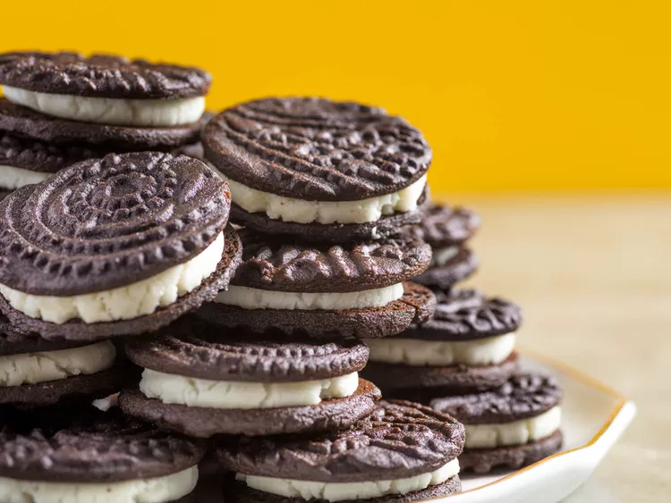

Copycat Oreos

The ultimate combo of chocolate cookies sandwiching sweet cream is now at your fingertips.
Although they may not be original, they still tastes pretty damn good.
Ingredient List:
For the wafers:
- 4 ounces unsalted butter (about 8 tablespoons; 115g), creamy and soft, about 68°F (20°C)
- 3 1/2 ounces sugar (about 1/2 cup; 100g)
- 2 ounces golden syrup (about 3 tablespoons; 55g), such as Lyle’s
- 1/2 teaspoon baking soda
- 1/4 teaspoon (1g) Diamond Crystal kosher salt; for table salt, use about half as much by volume or the same weight
- 1/4 teaspoon coconut extract (optional)
- 5 3/4 ounces bleached all-purpose flour (about 1 1/4 cups, spooned; 165g), such as Gold Medal
- 1 1/4 ounces Dutch-process cocoa powder (about 1/3 cup plus 1 tablespoon; 35g), such as Cacao Barry Extra Brute, plus more for dusting
For the filling:
- 6 ounces unsalted butter (about 12 tablespoons; 170g)
- 1 teaspoon vanilla extract
- 1/8 teaspoon Diamond Crystal kosher salt
- 8 1/2 ounces powdered sugar (about 2 cups plus 1 tablespoon; 240g)
Steps:
- For the Chocolate Wafer Dough: Combine butter, sugar, golden syrup, baking soda, salt, and coconut extract (if using) in the bowl of a stand mixer fitted with a paddle attachment. Mix on low speed to moisten, then increase to medium and beat until fluffy and light, about 5 minutes, pausing to scrape bowl and beater about halfway through.
- Sift flour and cocoa together. (If using cup measures, spoon into the cups and level with a knife before sifting.) With mixer running on low speed, sprinkle flour/cocoa mixture into butter mixture. It will seem dry and mealy at first, but continue mixing to form a smooth dough. Knead against sides of bowl to form a smooth ball, then divide in half and flatten into disks. Use immediately or wrap in plastic and refrigerate up to 1 week; soften cold dough 30 minutes at room temperature, then knead on a bare surface until pliable and smooth.
- For the Wafers: Adjust oven rack to middle position and preheat to 350°F (180°C). On a cocoa-dusted surface, roll a portion of dough into a 7-inch square. Sprinkle both sides with cocoa and roll until 1/4 inch thick; generously dust with cocoa and continue rolling to 1/8 inch (see note). Alternatively, roll dough to 1/8 inch using an embossed pin. Slide an offset spatula under dough to loosen, brush away excess cocoa, and stamp into 1 1/2–inch rounds.
- Arrange on a parchment-lined aluminum baking sheet, leaving 1/4 inch between wafers. Gather scraps, knead, re-roll, and cut as before. Repeat with remaining dough as well. Any remaining scraps can be discarded or baked to grind for crumbs. Bake until wafers are firm and dry, about 15 minutes, and cool to room temperature on the baking sheet. Fill immediately or store in an airtight container up to 1 week at room temperature.
- For the Filling: Before making the filling, flip half the chocolate wafers upside down so they can be filled immediately after preparing the filling, as it will quickly set.
- In a 2-quart stainless steel saucier, completely melt butter over medium-low heat. Simmer, stirring with a heat-resistant spatula, while butter hisses and pops; if you notice brown bits forming along the edges, reduce heat to low. Continue cooking and stirring until butter falls silent, then strain into the bowl of a stand mixer fitted with a paddle attachment.
- Add vanilla and salt, followed by powdered sugar. Mix on low to moisten, then increase to medium and beat until creamy and soft, about 5 minutes. Transfer to a heavy-duty pastry bag fitted with a 1/2-inch tip and use immediately; this filling cannot be made in advance.
- To Sandwich the Wafers: Pipe a generous dollop of filling in the center of each upturned wafer (just shy of 1 tablespoon, or a little more than 1/4 ounce). Sandwich with remaining halves, transfer to an airtight container, and stand at room temperature until filling has set, about 30 minutes. The cookies will keep for up to 1 week at room temperature, up to a month in the fridge, or 3 months if frozen; serve at room temperature.